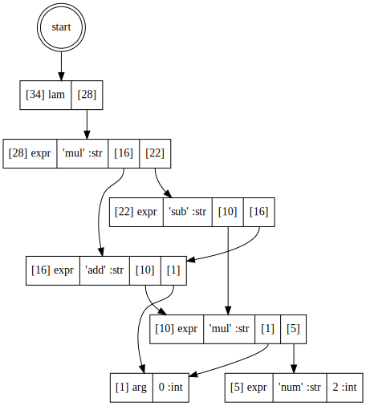

Lambda#
from sealir.lam import LamBuilder
lambar = LamBuilder()
@lambar.lam_func
def func_body(x):
a = lambar.expr("mul", x, lambar.expr("num", 2))
b = lambar.expr("add", a, x)
c = lambar.expr("sub", a, b)
d = lambar.expr("mul", b, c)
return d
print(lambar.format(func_body))
let $15 = λ {
let $3 = expr 'mul' (arg 0) (expr 'num' 2)
let $8 = expr 'add' $3 (arg 0)
let $12 = expr 'sub' $3 $8
let $14 = expr 'mul' $8 $12
}
print(lambar.tape.dump())
Tape @0x10fa333b0
| 0 | <0: none>
| 1 | arg 0
| 5 | expr 'num', 2
| 10 | expr 'mul', <1>, <5>
| 16 | expr 'add', <10>, <1>
| 22 | expr 'sub', <10>, <16>
| 28 | expr 'mul', <16>, <22>
| 34 | lam <28>
lambar.render_dot()

func_body = lambar.run_abstraction_pass(func_body)
print(lambar.format(func_body))
let $15 = λ {
let $12 = expr 'mul' (arg 0) (expr 'num' 2)
let $13 = λ {
let $7 = expr 'add' (arg 0) (arg 1)
let $8 = λ {
let $2 = expr 'sub' (arg 1) (arg 0)
let $6 = expr 'mul' (arg 0) $2
}
let $11 = app $8 $7
}
let $14 = app $13 $12
}
print(lambar.tape.dump())
Tape @0x10fa333b0
| 0 | <0: none>
| 1 | arg 0
| 5 | expr 'num', 2
| 10 | expr 'mul', <1>, <5>
| 16 | expr 'add', <10>, <1>
| 22 | expr 'sub', <10>, <16>
| 28 | expr 'mul', <16>, <22>
| 34 | lam <28>
| 38 | arg 1
| 42 | .md.rewrite 'sealir.lam.rewrite_into_abstraction.<locals>.RewriteAddArg', <38>, <1>
| 48 | arg 0
| 52 | .md.rewrite 'sealir.lam.rewrite_into_abstraction.<locals>.RewriteAddArg', <48>, <10>
| 58 | expr 'add', <48>, <38>
| 64 | .md.rewrite 'sealir.lam.rewrite_into_abstraction.<locals>.RewriteAddArg', <58>, <16>
| 70 | expr 'sub', <48>, <58>
| 76 | .md.rewrite 'sealir.lam.rewrite_into_abstraction.<locals>.RewriteAddArg', <70>, <22>
| 82 | expr 'mul', <58>, <70>
| 88 | .md.rewrite 'sealir.lam.rewrite_into_abstraction.<locals>.RewriteAddArg', <82>, <28>
| 94 | lam <82>
| 98 | app <94>, <10>
| 103 | expr 'mul', <1>, <5>
| 109 | .md.rewrite 'sealir.lam.LamBuilder.run_abstraction_pass.<locals>.RewriteProgram', <103>, <10>
| 115 | expr 'add', <103>, <1>
| 121 | .md.rewrite 'sealir.lam.LamBuilder.run_abstraction_pass.<locals>.RewriteProgram', <115>, <16>
| 127 | expr 'sub', <103>, <115>
| 133 | .md.rewrite 'sealir.lam.LamBuilder.run_abstraction_pass.<locals>.RewriteProgram', <127>, <22>
| 139 | .md.rewrite 'sealir.lam.LamBuilder.run_abstraction_pass.<locals>.RewriteProgram', <98>, <28>
| 145 | lam <98>
| 149 | .md.rewrite 'sealir.lam.LamBuilder.run_abstraction_pass.<locals>.RewriteProgram', <145>, <34>
| 155 | expr 'mul', <1>, <5>
| 161 | .md.rewrite 'sealir.lam.rewrite_into_abstraction.<locals>.RewriteAddArg', <155>, <10>
| 167 | expr 'add', <155>, <1>
| 173 | .md.rewrite 'sealir.lam.rewrite_into_abstraction.<locals>.RewriteAddArg', <167>, <16>
| 179 | expr 'sub', <155>, <167>
| 185 | .md.rewrite 'sealir.lam.rewrite_into_abstraction.<locals>.RewriteAddArg', <179>, <22>
| 191 | expr 'mul', <167>, <179>
| 197 | .md.rewrite 'sealir.lam.rewrite_into_abstraction.<locals>.RewriteAddArg', <191>, <28>
| 203 | lam <191>
| 207 | .md.rewrite 'sealir.lam.rewrite_into_abstraction.<locals>.RewriteAddArg', <203>, <34>
| 213 | arg 2
| 217 | .md.rewrite 'sealir.lam.rewrite_into_abstraction.<locals>.RewriteAddArg', <213>, <38>
| 223 | arg 1
| 227 | .md.rewrite 'sealir.lam.rewrite_into_abstraction.<locals>.RewriteAddArg', <223>, <48>
| 233 | arg 0
| 237 | .md.rewrite 'sealir.lam.rewrite_into_abstraction.<locals>.RewriteAddArg', <233>, <58>
| 243 | expr 'sub', <223>, <233>
| 249 | .md.rewrite 'sealir.lam.rewrite_into_abstraction.<locals>.RewriteAddArg', <243>, <70>
| 255 | expr 'mul', <233>, <243>
| 261 | .md.rewrite 'sealir.lam.rewrite_into_abstraction.<locals>.RewriteAddArg', <255>, <82>
| 267 | lam <255>
| 271 | app <267>, <58>
| 276 | expr 'mul', <1>, <5>
| 282 | .md.rewrite 'sealir.lam.LamBuilder.run_abstraction_pass.<locals>.RewriteProgram', <276>, <10>
| 288 | expr 'add', <276>, <1>
| 294 | .md.rewrite 'sealir.lam.LamBuilder.run_abstraction_pass.<locals>.RewriteProgram', <288>, <16>
| 300 | expr 'sub', <276>, <288>
| 306 | .md.rewrite 'sealir.lam.LamBuilder.run_abstraction_pass.<locals>.RewriteProgram', <300>, <22>
| 312 | expr 'mul', <288>, <300>
| 318 | .md.rewrite 'sealir.lam.LamBuilder.run_abstraction_pass.<locals>.RewriteProgram', <312>, <28>
| 324 | lam <312>
| 328 | .md.rewrite 'sealir.lam.LamBuilder.run_abstraction_pass.<locals>.RewriteProgram', <324>, <34>
| 334 | expr 'add', <48>, <38>
| 340 | .md.rewrite 'sealir.lam.LamBuilder.run_abstraction_pass.<locals>.RewriteProgram', <334>, <58>
| 346 | expr 'sub', <48>, <334>
| 352 | .md.rewrite 'sealir.lam.LamBuilder.run_abstraction_pass.<locals>.RewriteProgram', <346>, <70>
| 358 | .md.rewrite 'sealir.lam.LamBuilder.run_abstraction_pass.<locals>.RewriteProgram', <271>, <82>
| 364 | lam <271>
| 368 | .md.rewrite 'sealir.lam.LamBuilder.run_abstraction_pass.<locals>.RewriteProgram', <364>, <94>
| 374 | app <364>, <276>
| 379 | .md.rewrite 'sealir.lam.LamBuilder.run_abstraction_pass.<locals>.RewriteProgram', <374>, <98>
| 385 | expr 'mul', <1>, <5>
| 391 | .md.rewrite 'sealir.lam.LamBuilder.run_abstraction_pass.<locals>.RewriteProgram', <385>, <103>
| 397 | expr 'add', <385>, <1>
| 403 | .md.rewrite 'sealir.lam.LamBuilder.run_abstraction_pass.<locals>.RewriteProgram', <397>, <115>
| 409 | expr 'sub', <385>, <397>
| 415 | .md.rewrite 'sealir.lam.LamBuilder.run_abstraction_pass.<locals>.RewriteProgram', <409>, <127>
| 421 | lam <374>
| 425 | .md.rewrite 'sealir.lam.LamBuilder.run_abstraction_pass.<locals>.RewriteProgram', <421>, <145>
lambar.render_dot()